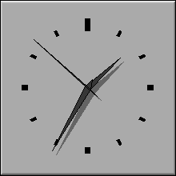
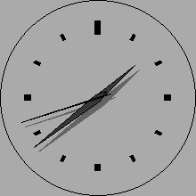

Class Hierarchy
Fl_Widget
|
+----Fl_Clock
Include Files
#include <FL/Fl_Clock.H>
Description
This widget provides a round analog clock display and is provided for
Forms compatibility. It installs a 1-second timeout callback using
Fl::add_timeout().
 
Methods
Creates a new Fl_Clock widget using the given position, size,
and label string. The default boxtype is FL_NO_BOX.
The destructor also deletes all the children. This allows a
whole tree to be deleted at once, without having to keep a pointer to
all the children in the user code. A kludge has been done so the
Fl_Clock and all of it's children can be automatic (local)
variables, but you must declare the Fl_Clockfirst, so
that it is destroyed last.
Returns the current hour (0 to 23).
Returns the current minute (0 to 59).
Returns the current second (0 to 60, 60 = leap second).
The first two forms of value set the displayed time to the
given UNIX time value or specific hours, minutes, and seconds.
The third form of value returns the displayed time in
seconds since the UNIX epoch (January 1, 1970).